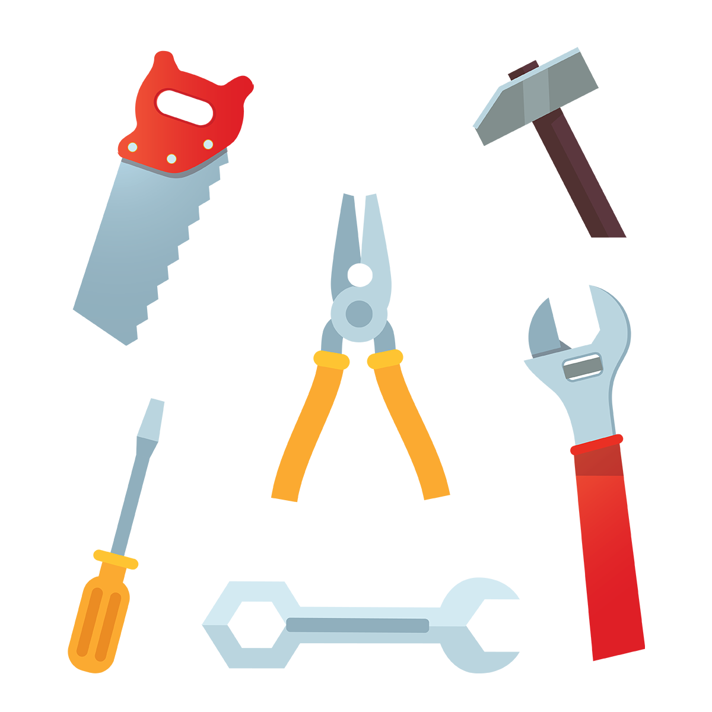
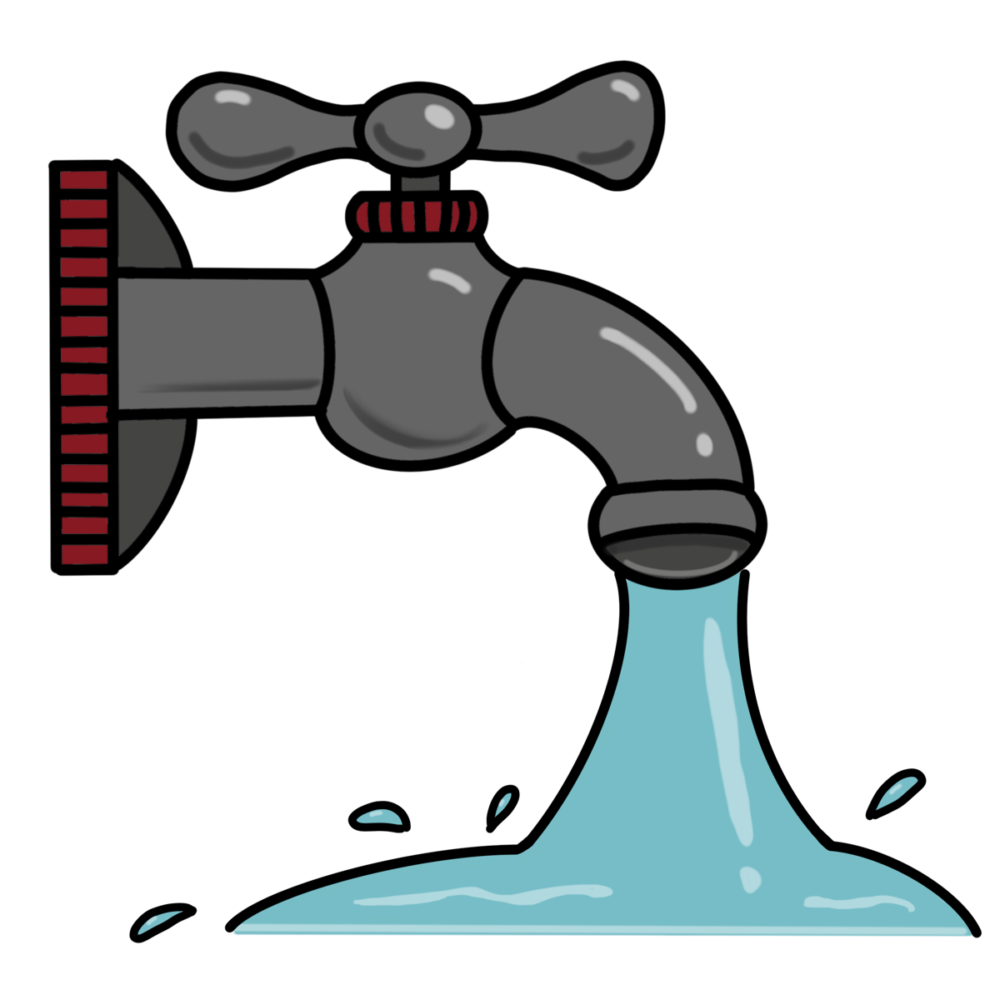
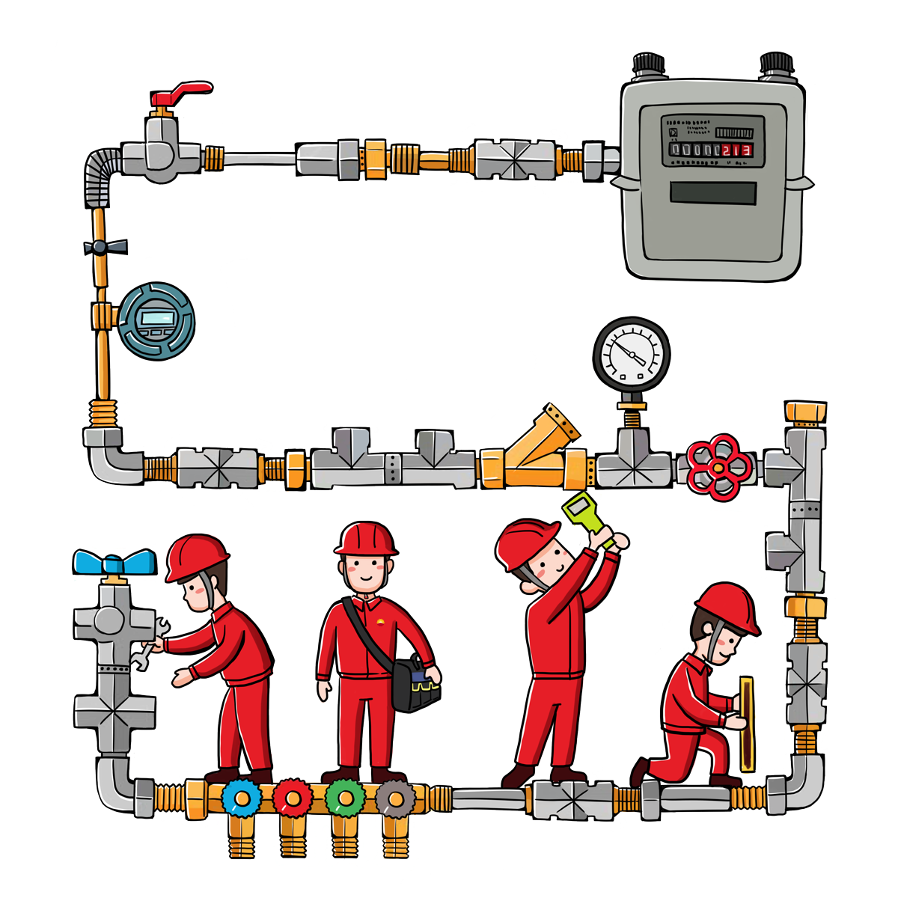

Enterprise Platforms
- Part of central IT at IU: UITS
-
Combination of several former groups:
- Systems Integration/Middleware
- Linux Administration
- Database Administration
- Cloud Support
Agenda
- What is Platform Engineering?
- Three main pillars
- Core components
- Cloud integrations
“A digital platform is a foundation of self-service APIs, tools, services, knowledge and support which are arranged as a compelling internal product. Autonomous delivery teams can make use of the platform to deliver product features at a higher pace, with reduced co-ordination.”
Team Topologies


Platform Team Responsibilities
- Strong collaboration with customers
- Relies on fast prototyping and fast feedback
- Strong focus on usability and reliability
- Leads by example (eats our own dog food)
- Understands service adoption is not immediate
Improving DevEx
- Empower development teams
- Reduce cognitive load
- Tie everything together
- Amplify best practices


Differentiated Capabilities
- Take advantage of best aspects of each cloud
- Batteries included but removable
- Eases customer interactions

Platform as a product
- Managed as an agile project
- Platform stakeholder group

Thinnest viable platform
- Content pulled together into KB and cloud.iu.edu
- Support forms tied into automation
Asset/config management
- Keep track of what is needed and deployed
- Configuration managed in Git with IaC
- Secrets managed in HashiCorp Vault
Infrastructure orchestration
- Everything possible is IaC (Terraform/Ansible)
- Orchestrated with Argo Events/Workflows
- Artifact storage serves as a hub

Environment management
- Self-service mechanisms
- Codifying difference between environments

Deployment management
- CI/CD pipelines as-a-service
- Hooks to alert teams when input is needed
- Automated approval in certain cases

Role-based access control
- Seamless access to services we maintain
- Integration with Incommon TAP
- Group release through SAML/OIDC integration
Development assistance
- Increasing use of purpose-built tools
- Want development to be close to production
- Container/cloud-based development environments
- GitHub Codespaces
Platform assets
- Increasing dependence on platform orchestration
- Tanzu tooling for creating/managing Kubernetes clusters in various cloud environments
- Better options for solving some scalability problems
Crossplane
- Extend Kuberntes to support cloud resources
- Incorporate cloud assets into Kubernetes templates